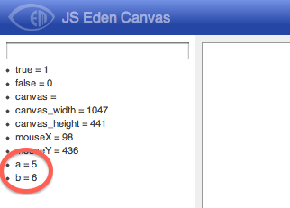

This guide will give you an introduction to JS Eden, the web variant of tkeden.
There are several different flavours of JS Eden, but the one you will use today is JS Eden Canvas which is available at:
http://harfield.org.uk/jsedencanvas/
Disclaimer: JS Eden is a "work in progress" so be aware that some/all models have bugs/problems.
The first thing that you will notice is there are 3 parts to the screen. On the left is the observable list. On the right is the canvas, and below this the Eden input box.
Let's get started, so type in the input box:
a = 5;
b = 6;
Then click on 'Execute'. To inspect the value of a and b, you can view the values of all observables in the left hand panel:

You can change observables at any time. (1) Can you change the value of a to be 7?
Create a new observable called c:
c = a + b;
The observable c should now have the value of a+b. There is another way of calculating a+b, using dependency:
d is a + b;
Now c and d should have the same value. Try changing the value of a:
a = 1;
Are c and d still the same? They are not, because d has changed. It has updated to maintain the 'dependency' of d is a+b. In JS Eden, 'is' is used to create dependencies between observables, much like the dependencies between cells in a spreadsheet.
(2) Can you create a new observable called 'doubleA' which is always twice as big as 'a'?
The next thing you might notice is the "canvas" that is currently an empty white space. This will be the main focus of our exploration.
To add a line:
myLine is Line(0,0,50,100);
canvas is [myLine];
The first part creates the line observable, with the parameters x1, y1, x2, y2 representing the two points between which the straight line is drawn.
The second part defines the canvas observable as a list containing the line observable. (Without this, you would not see the line in the your browser.)
Modify the line:
myLine is Line(10,100,10+a,100);
Now the line is dependent on the value of the observable "a". (3) What happens when you change 'a'?
Line colour:
col is "red";
myLine is Line(10,100,10+a,100,col);
In JS Eden you are free to define and redefine observables whenever you like. (4) Can you change the colour of the line to blue?
Take a look at the Observables panel on the left again. "Woh, there is some stuff in there I didn't write!" Yes, for example, "mouseX" and "mouseY" are 2 observables that are provided by JS Eden and they correspond to the mouse pointer position in the canvas. Try this:
myLine is Line(0,0,mouseX,mouseY);
There are another 2 observables for the last position of the mouse click ("mouseClickX"), and another observable for the current state of the mouse ("mousePressed").
(5) Can you make the line turn red when the mouse button is being pressed?
(Hint: You can write "inline if" expressions of the form [bool] ? [true_value] : [false_value].)
There are several different shape type observables you can create.
To make a circle:
myCircle is Circle(100,100,50);
The minimum parameters for a Circle consist of x, y, radius. Then add it to the canvas observable:
canvas is [myLine, myCircle];
There are 2 optional parameters for Circle: fill colour and outline colour. Try this:
myCircle is Circle(mouseClickX, mouseClickY, 50, "orange", "black");
(7) Draw a vertical line down the middle of the canvas. If the user moves the circle to the left side of the browser then it should show a yellow circle. If they move to the right then it should be a green circle.
To make a rectange:
myRect is Rectangle(20,20,220,100);
You will also need to add the rectangle to the canvas ("canvas is [...]"). The minimum parameters for a rectangle are x, y, width and height. Rectangle has 2 optional parameters which are similar to the Circle properties: fill colour and outline colour.
There are 2 types of observable for putting text on the canvas. The first is Text:
myText is Text("Hello folks",50,50,"red");
Parameters: text, x, y, text colour.
We can make the text dependent on a string:
myText is Text(label,50,50,"red");
label = "I am a label";
So now we can change the label:
label = "Put the circle in the rectangle!";
And we can make the label a dependency:
label is mouseClickX < 200 && mouseClickY < 100 ? "Well done!" : "Put the circle in the rectangle!";
The Text observable is for simple labels. For richer text there is the Div:
myDiv is Div("myDiv", 0, 100, 300, 200, "<h1>Title</h1><p>Some text</p>", "");
Parameters: name, x, y, width, height, html, style.
With Text and Divs we started moving away from drawing towards user interface components. Here are some others.
To create a button:
myButton is Button("myButton","Press me",50,300,true);
Parameters: name, text, x, y, enabled
The first parameter name is required because when there is user interaction with a button then it will update an observable. In the above example, the name is "myButton" and so when the user clicks the button there is an observable "myButton_clicked" that is updated. This means we can write a trigger:
proc myButtonAction : myButton_clicked {
label = "Button was clicked!";
}
(8) Can you make a game for children that contains 4 circles and 1 rectangle? Two circles are blue and two circles are red. Use dependency to make the rectangle change colour to yellow if the rectangle contains 2 circles of the same colour.
(9) Can you make a plan of your bedroom including a bed, a table, chairs, windows and doors? Use dependency so that the plan resizes to the size of the canvas.
(10) Can you make a multiple choice quiz containing 3 questions? Use dependency to show when the user has answered correctly or incorrectly.